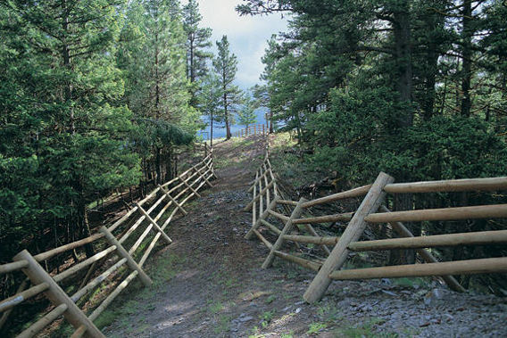

The Yurts at Pacific Trails
- Our luxury yurts are permanent structures four feet1 off the ground. Each yurt has canvas walls,
a wooden floor, and a roof dome that can be opened.
- Woods are artificial
- Not slippery
- Each yurt is furnished with a queen-size bed with down quilt and gas-fired stove3. Your luxury
camping experience includes electricity and a sink with hot and cold running water. Shower and
restroom facilities are located in the lodge.
- Electricity will be provided using high-voltage battery
- Circuit breaker is present.
- Most guests pack comfortable walking shoes and plan to dress for changing weather with light
layers of clothing. It's also helpful to bring a flashlight and a sense of adventure!
- All the guests will get the opportunity to use our luxury whirlpool®
and Pool ®
inside our luxury
resort area.
1 Measured in scalar scale
3 FridgeWood Company